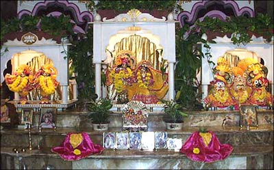

|
Type of centre: Temple
Contact details
Address: 72 Commonwealth Ave.
Boston, MA 02116
USA
Ph: +1-617-2478611
E-mail: premananda@juno.com
Website:
http://www.iskconboston.org
Deities: Sri Sri Radha Gopivallabha, Sri Sri Jagannatha-Baladeva-Subadhra,
Sri Sri Gaura-Natai
When installed: Radha-Gopivallabha were installed in 1971
by Srila Prabhupada, Sri Sri Gaura-Nitai in 1976 by Tamal Krsna
Goswami.

Other Information:
Interfaith
Since the United States eased immigration laws in the 1960s,
a new wave of immigrants from Asia and Latin America has helped
to transform the religious landscape of our country. Established
religious institutions have adapted to a growing diversity of believers,
and traditions once little known in the United States have established
centres in cities from coast to coast.
The Boston metropolitan area is home to Christians, Jews, Hindus,
Jains, Buddhists. Muslims, Baha'is, Pagans, Taoists, Zoroastrians
and Native Americans. Members of the area's clergy are trying to
understand their new neighbors and keep a finger on the pulse of
this new racial, ethnic and cultural reality. The Interfaith movement
builds community across traditional boundaries through group meetings,
multi-faith services, doctrinal or issue-oriented dialogue, and
co-ordinated social action.
Bhaktivinoda Thakura, a 19th century Vaisnava saint observed that
interfaith involvement strengthens one's faith in one's own tradition
while helping develop a greater sense of respect for the sanctity
of other faiths. He said:
When we have occasion to be present at the place
of worship of other religionists at the time of their worship,
we should stay there in a respectful mood, contemplating thus:
'Here is being worshiped my adorable highest entity God, in a
different form than that of mine. Due to a different practice
of a different kind, I cannot thoroughly comprehend this system
of theirs. But seeing it, I am feeling a greater attachment for
my own system. God is one. I bow down before His emblem as I see
here and offer my prayer to my Lord was adopted this different
emblem so that He may increase my love toward Him in the form
that is acceptable for me.
In this spirit, ISKCON of New England currently participates in
two groups: The Boston Clergy and Religious Leaders Group for Interfaith
Dialogue and The Massachusetts Bay Chapter of the Religion Communications
Council.
ISKCON has also started a Catholic-Vaishnava Interfaith Dialogue
in conjunction with local parishes. In the future, we hope to host
web pages for local interfaith groups from this site.
Gift Shop
Mohini's Gifts offers a wide array of spiritual goods.
Catering
Dedicated to the fine art of gourmet vegetarian cuisine.
How to get there
From Nashua
Route 3 South to 95 North, 95 North to 93 South, 93 South to Boston
Exit 26A Leverett Circle, Follow the signs to the Storrow Drive
Exit (at the new Fleet Center/old Boston Garden). Once you exit,
keep left, follow the signs for Storrow Drive. You'll take the 2nd
exit off Storrow Drive marked Copley Square/Back Bay (it's a left-hand
exit), Take a right at the first light (this is Beacon Street).
Go two blocks to Clarendon Street (second set of lights). Go left
on Clarendon, take Clarendon four blocks (you'll go past Commonwealth
Avenue). After Boylston Street you'll see the Trinity Church on
your right. To the left is a large white stone building. Three-quarters
of the way up the block on the left you'll see the entrance for
the Back Bay Garage. When you park the car, walk North on Clarendon
to Commonwealth. Take a right on Commonwealth. The temple (72 Commonwealth)
is half-way down the block on the right.
From Londonderry
93 South to Boston Exit 26A Leverett Circle. Follow the signs to
the Storrow Drive Exit (at the new Fleet Center/old Boston Garden).
Once you exit, keep left, follow the signs for Storrow Drive. You'll
take the 2nd exit off Storrow Drive marked Copley Square/Back Bay
(it's a left-hand exit). Take a right at the first light (this is
Beacon Street). Go two blocks to Clarendon Street (second set of
lights). Go left on Clarendon. Take Clarendon four blocks (you'll
go past Commonwealth Avenue). After Boylston Street you'll see the
Trinity Church on your right. To the left is a large white stone
building. Three-quarters of the way up the block on the left you'll
see the entrance for the Back Bay Garage. When you park the car,
walk North on Clarendon to Commonwealth. Take a right on Commonwealth.
The temple (72 Commonwealth) is halfway down the block on the right.
From Marlboro or Worcester, MA
Mass Pike East to Exit 22 Prudential Center/Copley Square Follow
the signs for Copley Square Just around the curve, the ramp forks,
follow the sign for Back Bay. At the third set of lights, take a
left, this is Berkeley Street. Go one block to St. James Street,
take a left. The Back Bay Garage is on your right, halfway down
the block. When you park the car, walk North on Clarendon to Commonwealth.
Take a right on Commonwealth. The temple (72 Commonwealth) is halfway
down the block on the right.
From Providence
95 North to 93 North 93 North to BostonTake Exit 19 (East Berkeley
Street). This is a long exit ramp, take a left at the first set
of lights. This is Berkeley Street. After the intersection with
Columbus Avenue, go two blocks to St. James Street. Take a left
on St. James Street, the entrance to Back Bay Garage is half way
down the street on the right. When you park the car, walk North
on Clarendon to Commonwealth. Take a right on Commonwealth. The
temple (72 Commonwealth) is halfway down the block on the right.
From Connecticut
Take 84, 395 or 91 North to Mass Pike. Mass Pike East to Boston
Exit 22 Prudential Center/Copley Square. Follow the signs for Copley
Square. Just around the curve, the ramp forks, follow the sign for
Back Bay. At the third set of lights, take a left, this is Berkeley
Street. Go one block to St. James Street, take a left. The Back
Bay Garage is on your right halfway down the block. When you park
the car, walk North on Clarendon to Commonwealth. Take a right on
Commonwealth. The temple (72 Commonwealth) is halfway down the block
on the right.
Via the Boston Subway
The temple is located on the Green Line. Get off at Arlington Street
Station. On street level, there is a church on the left and a park
on the right. Walk two blocks keeping the park on the right. Take
a left on Commonwealth Avenue. The temple is 1.5 blocks up the street
on the left side. There is a sign that says ISKCON in the front
garden.
< Back · Top
^
|